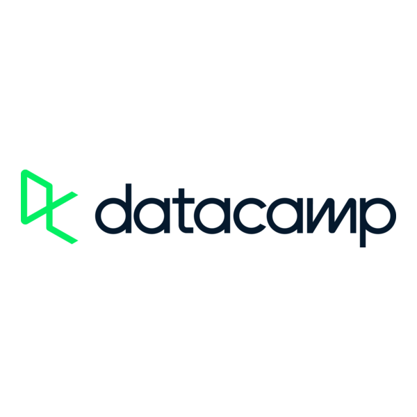
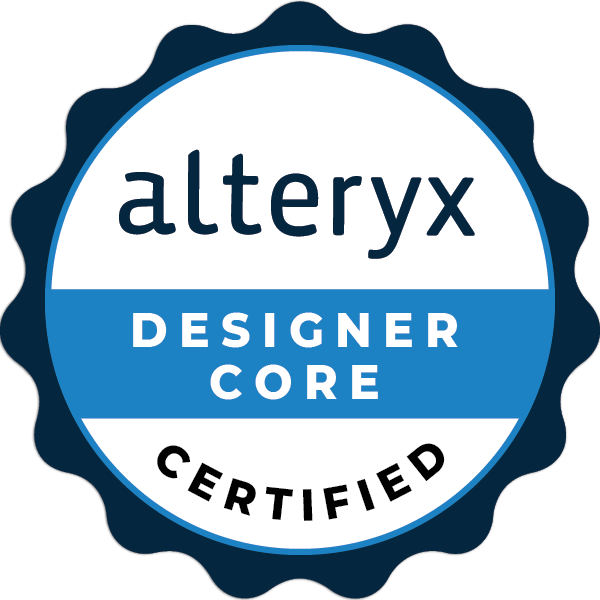

CRM analytics
Analyze customer behavior, segmentation, targeting, appetite and equipment indicators for commercial activation.
CRM-focused Data Analyst combining customer analytics, campaign performance, BI reporting and business recommendations.
Analyze customer behavior, segmentation, targeting, appetite and equipment indicators for commercial activation.
Track and optimize hundreds of campaigns across CRM tools, audience scopes and operational constraints.
Build Power BI dashboards and automated reports for commercial steering, campaign follow-up and daily monitoring.
Turn large customer datasets into clear insights, reliable KPIs and actions that business teams can use.
CRM, BI and operational reporting experience across banking, IT services and growing small-business environments.
Banque Populaire Auvergne Rhone Alpes
Customer analytics, segmentation and campaign monitoring for marketing, commercial and CRM teams.
DCS Easyware
Everwin administration, portfolio reporting and user support for commercial and operational units.
My Serigraphy
CRM, order tracking, sales KPIs and internal process structuring in a fast-growing small business.
My Serigraphy / freelance web design
Complementary CRM, marketing communication, SEO and website delivery experience.
Business, management, marketing and data education connected to applied analytics projects and work-study practice.
INSEEC MSc, Lyon
Data management, marketing analytics, CRM, business intelligence, data-driven decision making, Python, Dataiku and applied data projects.
IUT Lumiere Lyon 2
Organization management, activity steering, financial analysis, entrepreneurship and business process understanding.
Grouped capabilities organized by category for quick CV scanning.
Core analytics, design and web tools used across portfolio projects.
 Python
Python
 SQL
SQL
 Power BI
Power BI
 Excel
Excel
 DAX
DAX
 Teradata
Teradata
 Dataiku
Dataiku
 Tableau
Tableau
 R / RStudio
R / RStudio
 Minitab
Minitab
 JavaScript
JavaScript
 TypeScript
TypeScript
 React
React
 HTML
HTML
 CSS
CSS
 Git
Git
 SQLite
SQLite
 Figma
Figma
 Notion
Notion
 Miro
Miro
 Photoshop
Photoshop
 Airtable
Airtable
 MCP
MCP
 FastAPI
FastAPI
 PHP
PHP
 Mermaid
Mermaid
 Zapier
Zapier
 n8n
n8n
Selected public and private projects showing CRM analytics, BI, pricing intelligence, data visualization and local productivity tools.
End-to-end banking churn study with risk scoring, model interpretation and a Streamlit dashboard.
Decision tool for tracking catalogue performance, streaming trends and artist investment priorities.
Pricing intelligence simulator with reliability scoring, elasticity modeling and product-level recommendations.
Tamagotchi-inspired micro CRM for managing leads, client momentum and business health.
Interactive 3D map that turns a GitHub profile into an explorable repository and file system space.
Private local transcription tool for legal audio workflows, with configurable offline processing modes.
Private creative web app for transforming images and GIFs with dithering, palettes, presets and batch exports.
Private local macOS application for managing job applications as a personal recruitment CRM.
Verified training and assessment signals across data analysis, business analysis, BI tooling, CRM and product-oriented work.
Microsoft
Microsoft

DataCamp

Alteryx
DataScientest / Liora
Techaway
Sellsy
Microsoft
LinkedIn Learning
Compact language comparison on practical CV dimensions.
| Skill | French | English |
|---|---|---|
| Speaking | Native | Professional |
| Writing | Native | Professional |
| Reading | Native | Advanced |
| Listening | Native | Professional |
| Vocabulary | Native | Professional |
Open to data, dashboarding, marketing analytics, interface design and workflow clarification projects.